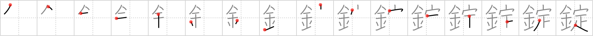

錠
← →
lock

Reading:
On-Yomi: ジョウ
Heisig story:
Metal of itself doesn't lock. It needs to be so determined by a locksmith. Now make a concrete image of that.
Koohii stories:
1) [ngoli1] 26-9-2007(211): Even if you lock up your GOLD, a DETERMINED thief will get it in the end.
2) [Shibo] 14-3-2008(173): The best stories for this kanji tend to have a thief in them, which always makes me confuse them with the kanji for burglar (357). So, let's try this one: My girlfriend wears a metal chastity belt with a lock but I am determined to open it! I must get inside!
3) [howdycowdy] 3-3-2008(81): A LOCK is metal that is determined to keep intruders out.
4) [pazustep] 16-7-2008(73): A lock is a piece of metal that will determine who can or can't get in.
5) [hoolan] 2-3-2009(15): A METAL LOCK DETERMINES who can get in.